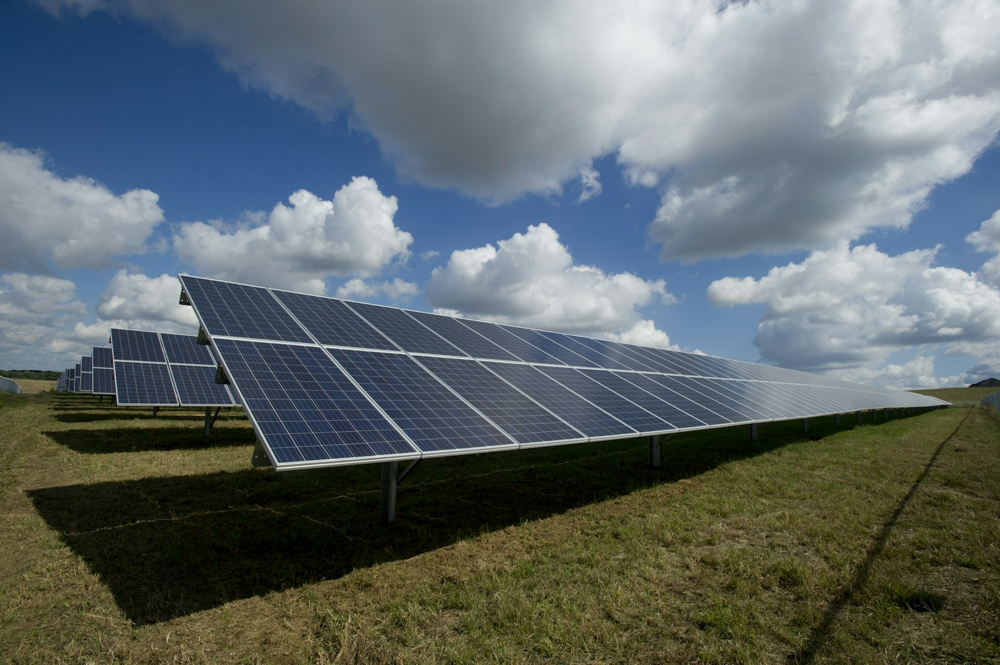

Разкажи за обекта си
Потребление, покрив и бюджет. Започваме с данните, с които разполагаш.
Открий какво може твоят покрив. Сравни решенията и направи първата стъпка към собствена слънчева енергия.
 СЛЪНЦЕТО Е НА ТВОЯ СТРАНА
СЛЪНЦЕТО Е НА ТВОЯ СТРАНАСобствена енергияЗа потреблението на място
По-информиран изборЯсни сметки и допускания
По-устойчиво утреВъзобновяем източник
Потребление, покрив и бюджет. Започваме с данните, с които разполагаш.
Примерна мощност, генерация и собствено потребление с видими допускания.
Разбери какво е нужно за техническо обследване и индивидуална оферта.

ЕНЕРГИЯТА ИМА НОВА ПЕРСПЕКТИВАЗа дома — енергия за ежедневието. За бизнеса — възможност да използваш слънчевата генерация в работните часове.
Три примерни конфигурации.
Окончателният избор започва с обследване.
За първата стъпка към собствена енергия.
Компактна начална конфигурация.
Къщи с умерено потребление и подходящ покрив.
Избери решениеПовече пространство. Повече възможности.
Повече панели за по-големи потребности.
Домове с по-високо потребление и повече свободна площ.
Избери решениеЕнергия в ритъма на работния ти ден.
Фокус върху потреблението през работния ден.
Малки магазини, офиси и работилници с дневно потребление.
Избери решениеНе. Важни са състоянието, конструкцията, ориентацията, наклонът, засенчването и достъпната площ. Необходимо е техническо обследване и проверка на правото за монтаж.
Зависи от часовете на потребление и целите ти. Батерията може да премести част от използването към вечерта, но добавя разход, загуби и изисквания към инсталацията.
Не автоматично. Резервното захранване изисква подходящ инвертор, оборудване и отделно проектиране. Наличието на батерия само по себе си не го гарантира.
Това зависи от условията за присъединяване, договорите и приложимите правила. Калкулаторът не включва продажба на излишъци.
Не. MySolar е демонстрационен прототип. Конфигурациите и ценовите допускания са примери, а заявките не се изпращат.